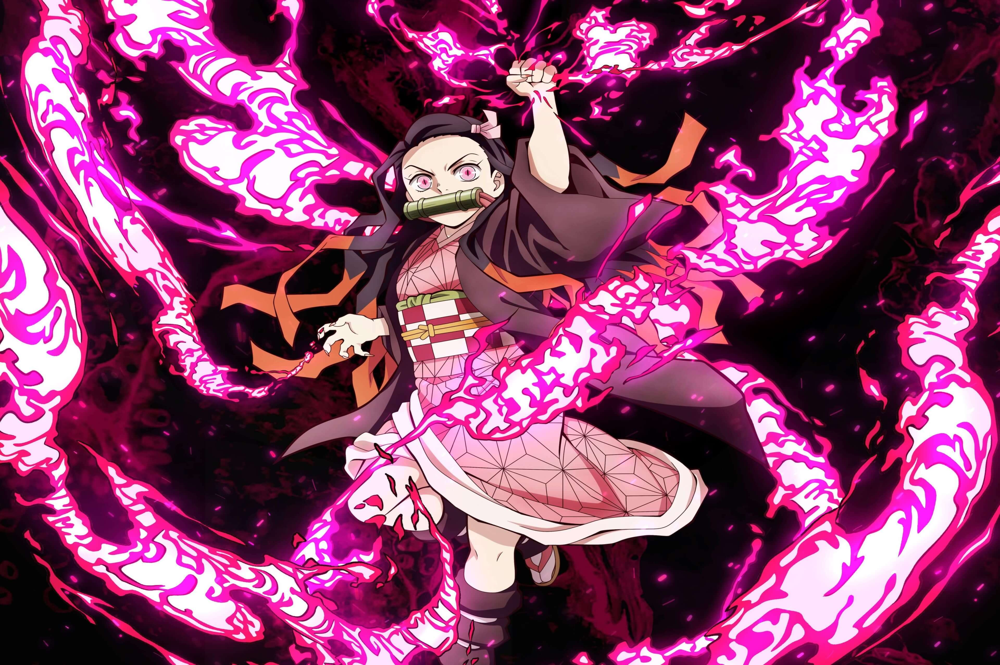
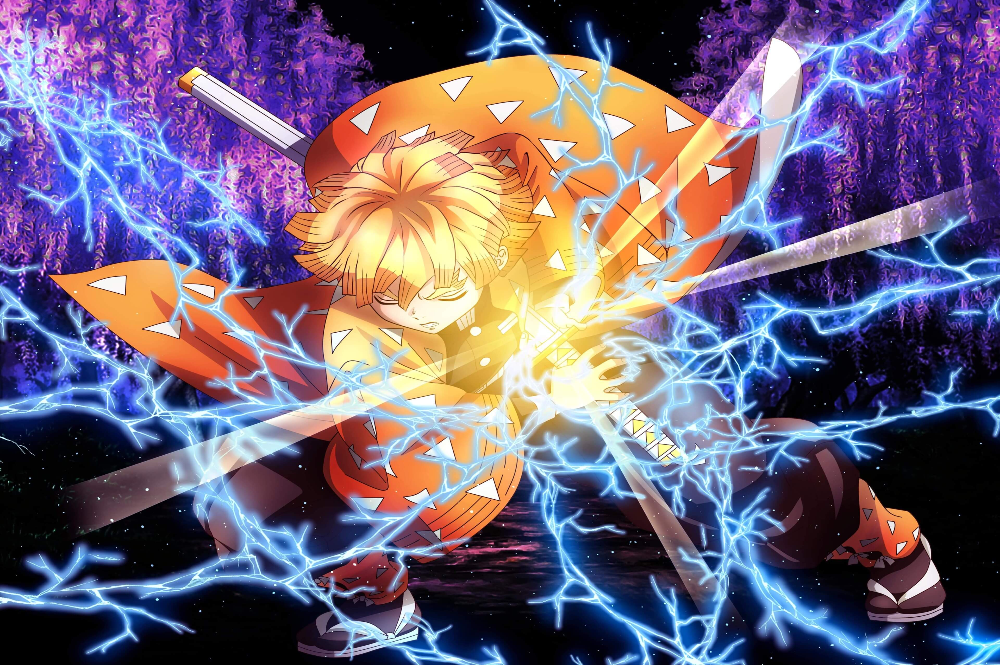
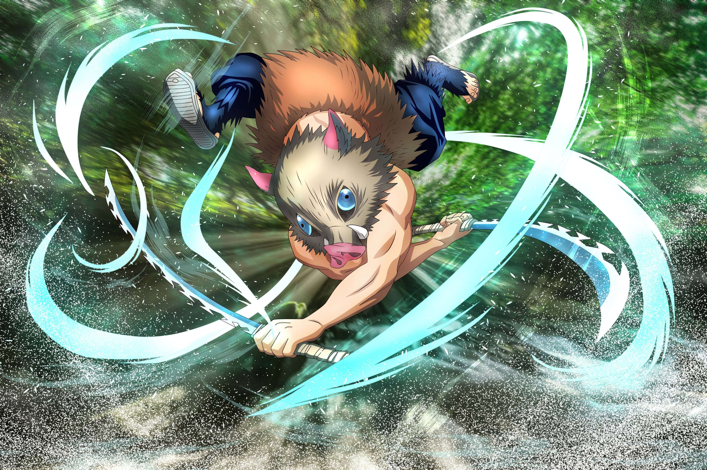

Tanjiro is the main character in the anime and manga Demon Slayer. He is a kind and
brave
boy who becomes a demon slayer to save his sister Nezuko and avenge his family.

Demon Slayer
Nezuko
Anime
Nezuko is Tanjiro's younger sister in Demon Slayer. She was turned into a demon but
still
shows human emotions and protects people. Despite being a demon, she refuses to hurt
humans
and fights alongside Tanjiro.

Demon Slayer
Zenitsu
Anime
Zenitsu is one of Tanjiro's friends in Demon Slayer. He is often scared and nervous, but
becomes very powerful when he’s unconscious or asleep. He uses Thunder Breathing and
fights
bravely to protect others.

Demon Slayer
Inosuke
Anime
Inosuke is a strong and wild fighter in Demon Slayer. He wears a boar mask and uses
Beast
Breathing. He is aggressive and loves to challenge others, but he cares deeply about his
friends, even if he hides it.